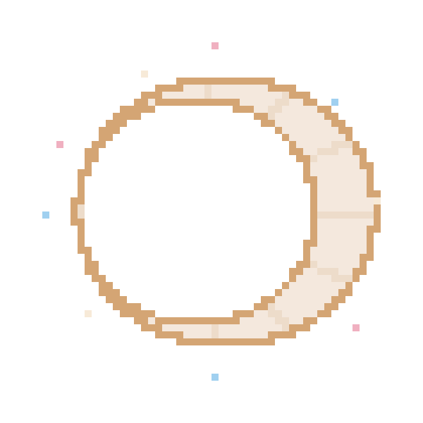

福州大学计算机协会
298 PIXELS · ONE IMAGE — 每一位成员都是像素
ICPC 区域赛集训体系，Codeforces 周赛复盘。每周三次集体训练，从铜牌到金牌的完整路径。
React、设计系统与可访问性。本站即本方向的实战作品——欢迎 review 我们的源码。
操作系统、编译器与分布式系统。读 xv6，写玩具内核，理解代码脚下的土地。
缺一个像素，画面便不完整。
CURRENTLY 297 / 298 — 最后一块，也许是你
EST.2018 · FUZHOU